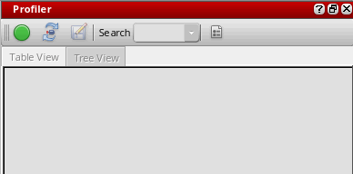
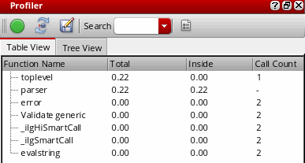
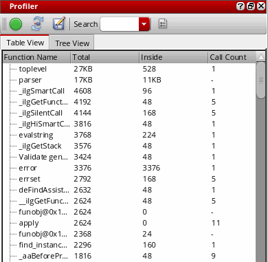
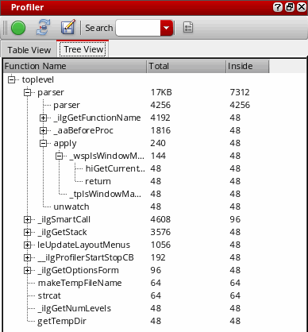

Running the Profiler
The profiler can be run on a SKILL code in two modes – time mode and memory mode. By default, when you access the profiler for the first time in a Virtuoso session, it is started in time mode. To change the mode any time during the run, use the Profiler Options window. For more information, see Profiler Options for Data Collection.
Running the Profiler in Time Mode
To run the profiler in time mode:
-
Choose Window – Assistants – Profiler. The Profiler assistant displays.
 -
Click
to start profiling.
When the profiler is running, the Debug menu items and the corresponding toolbar get deactivated. The debug capabilities become available for use only after you stop the profiler. - Execute the SKILL function you want to profile.
-
Click
to stop profiling. The profile summary report appears in the Profiler window. The total CPU time (in seconds) taken by the profiler is displayed at the bottom of the summary page. You can check the CPU time taken by a particular function by specifying the function name in the Search drop-down list box. To repeat the last search, press Enter.
You can also specify a prefix name in the Search drop-down list box to filter the profile summary report by function prefixes. The search results display both public and private functions that match the searched prefix.
The profile summary report is available in two formats – Table View or Tree View. Click the related tab to switch the view of the profiler summary report.

Table View of Profiler Summary (Time Mode)
On the Table View tab (refer to the image above), the profiler summary report displays the following information:
- Function Name: The name of the calling function.
- Total: The total execution time spent in the function, including the time spent in calls to other functions.
- Inside: The execution time spent within the function.
- Call Count: The number of times the function is called in your SKILL program.
To sort the columns in the profiler summary report, click the column header once.
The profiler summary report may not report the call count for SKILL functions that run quickly (quick functions). To display the call count for all functions, including quick functions, select both Memory Usage and Include function call counts options in the Profiler Options window before running the Profiler.
Tree View of Profiler Summary (Time Mode)
On the Tree View tab, the profiler summary report displays the following information in a hierarchical tree format (see the image below):
- Function Name: The name of the calling function.
- Total: The total execution time spent in the function, including the time spent in calls to other functions.
-
Inside: The execution time spent within the function.

Profiler summary report reports if a function is called recursively and displays a + sign against such functions. For example, in the image below, the function fibb1 is called recursively:
Running the Profiler in Memory Mode
To run the profiler in memory mode:
- Click to reset the Profiler.
-
Click
 (Profiler Options) in the Profiler assistant window. The Profiler Options assistant displays.
(Profiler Options) in the Profiler assistant window. The Profiler Options assistant displays. - Select the Memory Usage check box to switch to profiling in memory mode.
-
Click
to start profiling.
- Execute the SKILL function you want to profile.
-
Click
to stop profiling. The profile summary report appears in the Profiler window. The total memory allocated (in bytes) by the profiler displays at the bottom of the summary page. You can check the memory allocated to a particular function by specifying the function name in the Search drop-down list box.
Click the Table View or Tree View tab to switch the profile summary view.

Table View of Profiler Summary (Memory Mode)
On the Table View tab (refer to the image above), the profiler summary report displays the following information:
- Function Name: The name of the calling function.
- Total: The total bytes of memory consumed by the function, including the memory consumed by its child functions.
- Inside: The memory spent within the function.
- Call Count: The number of times the function is called in your SKILL program.
To sort the columns in the profiler summary report, click the column header once.
Tree View of Profiler Summary (Memory Mode)
On the Tree View tab, the profiler summary report displays the following information in a hierarchical tree format (see the image below):
- Function Name: The name of the calling function.
- Total: The total bytes of memory consumed by the function, including the memory consumed by its child functions.
-
Inside: The memory spent within the function.

Related Topics
Controls Available on the Profiler Summary Report
Return to top